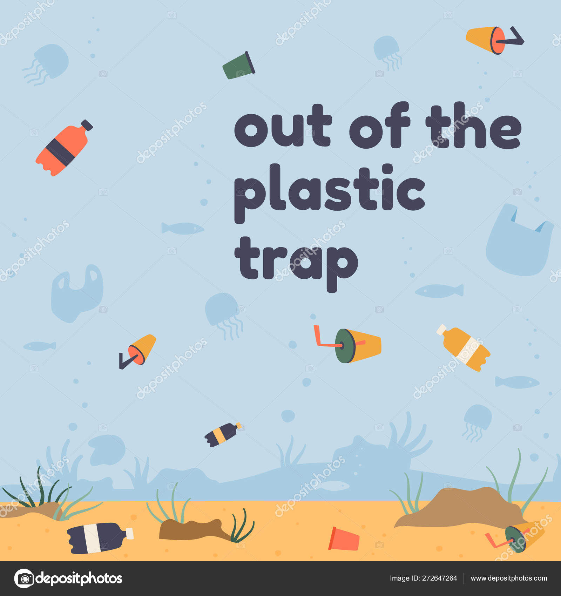

The disposal of plastic waste is a significant contributor to water pollution. Plastic products, such as bottles, bags, and packaging, often end up in waterways, where they can persist for hundreds of years, breaking down into microplastics that can be ingested by marine life. These microplastics can bioaccumulate as they move up the food chain, ultimately posing a threat to human health when seafood is consumed.
Plastic pollution has become a major environmental issue, especially when it comes to contaminating our waters. Plastics are synthetic polymers that are used in a wide range of products, from packaging materials to consumer goods. However, when these plastics are not disposed of properly, they end up in our waterways, where they can have serious environmental and health consequences. There are specific types of plastics that are known to be major contributors to water contamination.
One of the most common types of plastic found in our waters is polyethylene terephthalate (PET), which is commonly used in the production of water bottles, food containers, and packaging materials. PET is lightweight and durable, making it a popular choice for single-use products. However, when these bottles and containers are not properly recycled, they often end up in rivers, lakes, and oceans, where they can take hundreds of years to degrade, posing a serious threat to aquatic life.
Another type of plastic that is widely found in our waters is polypropylene (PP), which is used in the production of bottle caps, drinking straws, and various types of packaging. Like PET, PP is durable and resistant to degradation, making it a persistent pollutant in marine environments. These plastics can also break down into smaller microplastics, which are easily ingested by marine animals and can cause serious harm to their health.
Polystyrene (PS), commonly known as Styrofoam, is another plastic that is frequently found in water bodies. It is often used in disposable cups, food containers, and packaging materials. Polystyrene is lightweight and easily blown by the wind, leading to widespread contamination of coastal areas and water bodies. Once in the water, polystyrene can break down into smaller particles, which are often mistaken for food by marine animals, leading to digestive issues and even death.
In addition to these specific types of plastics, there are numerous other varieties that can contaminate our waters, including polyvinyl chloride (PVC), polyethylene (PE), and nylon. All these plastics pose a serious threat to the health and well-being of marine life, as well as to human beings who depend on clean and safe water sources.